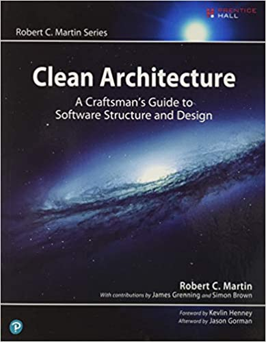
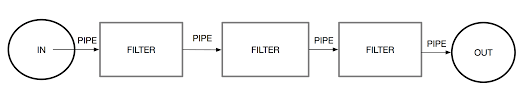
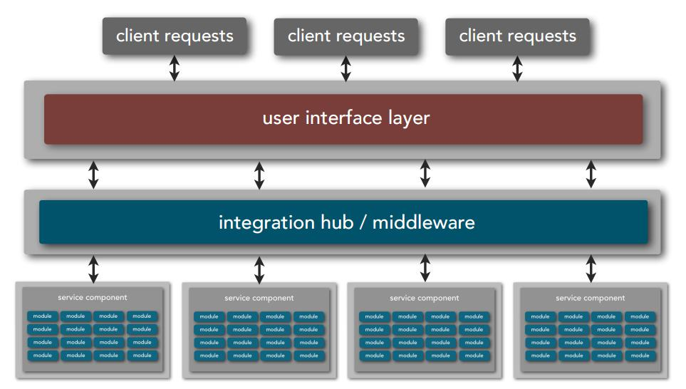
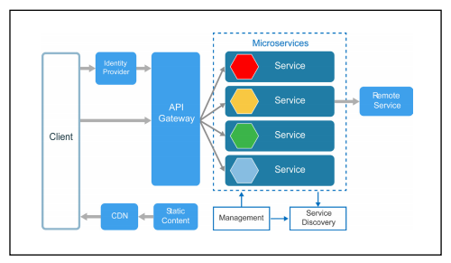
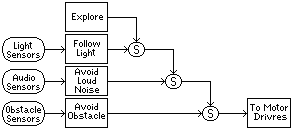
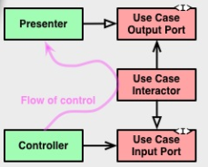

Architetture¶
La moderna costruzione del software riconosce all’architettura del sistema un ruolo strategico, nonostante il termine architettura sia tra i vocaboli più sovraccarichi di significato.
Normalmente, si parla di architettura di un sistema quando ci si vuole riferire all’insieme delle macro-parti in cui il sistema si articola, includendo le loro responsabilità, relazioni e interconnessioni.
Per molti, il termine architettura potrebbe però evocare l’immagine di uno schema in cui compare una rete di blocchi e linee di connessione; questa visione andrebbe meglio indicata col termine mappa.
Per altri, l’architettura evoca l’idea di uno schema concettuale di soluzione riferito a un certo dominio applicativo, come ad esempio nella frase architetture web; in questo caso sarebbe più appropriato utilizzare il termine framework.
L’ Open Group Architectural Framework (OpenGroupArch) definisce architettura:
“a set of elements depicted in an architectural model and a specification of how these elements are connected to meet the overall requirements of an information system”.
Altrove si dice che:
“the software architecture of a program or computing system is the structure or structures of the system, which comprises software components, the externally-visible properties of these components and the relationships among them”.
La IEEE Computer society definisce (nel 2000) l’architettura:
“the fundamental organization of a system embodied in its components their relationships to each other and to the environment, and the principles guiding its design and evaluation”.
Tra le altre accezioni possibili, una delle più curiose, su cui vale la pena di riflettere, è quella per cui:
l’architettura è ciò che rimane di un sistema quando non si può più togliere nulla, continuando a comprenderne la struttura e il funzionamento.
Le prime esperienze collettive nello studio delle architetture software possono essere fatte risalire al workshop OOPSLA del 1981 guidato da Bruce Anderson che mirava allo sviluppo di un “architecture handbook”.
Nel testo |

|
Il testo |
 |
{kind=link}
Da questi testi leggiamo:
Architecture is about the important stuff … whatever that is (Ralph Johson) (FSA pg. 1)
Everything in software architecture is a trade-off. (First law of Software Architecture) (FSA pg. 18)
Why is more important than how. (Second law of Software Architecture) (FSA pg. 18)
The architecture for a software system arises from the combinations of requriments and additional concerns (Auditability, Security, Legality, Scalability … -ilities si veda List of system quality attributes) each protected by fitness functions
All architecture become iterative becuase of unknown of unknowns (FSA pg. 14). What we need today is an Evolutionary Architecture. (FSA pg. 15).
An Evolutionary Architecture supports guided, incremental changes across multiple dimensions, including -ilities
Altrove (ad esempio in Building Evolutionary Architectures - ISBN : 9781492043454 ) leggiamo:
The software development ecosystem (tools, frameworks, prectices, ..) forms a dynamic equilibrium - much like a biological system.
The Continuos Delivery and DevOps movements added a new factor in the dynamic equilibrium.
To build evolvable software systems, architets must think beyond just the technical architecture.
Architetture preliminari¶
bigballofmud |
clientServer |

|

|
obbrobrio (122/52) |
3 tier (124) |
Architetture monolitiche¶
Layers |
Pipeline |
microkernel |

|
 | 
|
(151/58) |
Architetture distribuite¶
service-based |
Event-driven |
Space-based |
|  | 
|

|
(179/70) |
211/63 |
Service-oriented |
Microservices |

|
 |
(235/65) |
(245/68) |
A queste aggiungiamo le seguenti:
Architetture per applicazioni¶
Hexagonal |
Subsumption |
IOT |
 |
 | 
|
Architettura Esagonale (Port-Adapter)¶
Il concetto di Hexagonal Architecture è stato introdotto nel 2005 da Alistair Cockburn come un contributo ad evitare ben note ‘trappole strutturali’ nella progettazione ad oggetti, come ad esempio dipendenze non desiderate tra layers o indebite inserzioni di codice applicativo nel codice delle interfacce-utente.
Si tratta di un approccio alternativo alle tradizionali architetture ‘a livelli’ e, a detta di molti, segna anche l’origine delle architetture a microservizi. In sintesi, questo approccio:
Rende un’applicazione inconsapevole (e quindi indipendente) della natura dei dispositivi di ingresso. Un evento giunge dal mondo esterno tramite una porta e un opportuno adapter converte l’evento in una chiamata di procedura o in un messaggio verso l’applicazione.
Rende un’applicazione inconsapevole (e quindi indipendente) della natura dei dispositivi di uscita: quando essa deve emettere informazione verso il mondo esterno, utilizza una porta associata ad un adapter che crea gli opportuni segnali necessari per la specifica tencologia ricevente (umana o automatizzata).
{kind=link}
Un’applicazione ha una interazione con gli adapter legata alla sua propria semantica interna e non deve conoscere la natura di ciò che compare al di là degli adapter.
Permette di sviluppare e testare un’applicazione in modo indipendente da eventuali dispositivi run-time e/o database e di essere egualmente attivabile da utenti umani, programmi, test automatizzati o scripts.

La Clean Architecture¶
Proposta nel 2012 da Robert C. Martin specializza l’architettura esagonale fornendo ulteriori dettagli sui componenti, che sono presentati in anelli concentrici.

|

|
Gli adapter e le interfacce sono relegate negli anelli più esterni, mentre le parti centrali sono riservate alle entità e ai casi d’uso.
Viene imposto il vincolo che sono sempre gli anelli esterni a dover dipendere da quelli interni e mai viceversa.
|
|
|
|
Vincoli sulle dipendenze¶
La figura che segue illustra come i Controllers e i Presenters comunicano con gli Uses Cases del livello superiore.
Il flusso di controllo si origina dal Controller per passare poi allo UseCase e al Presenter. Lo scopo del Presenter è di separare i casi d’uso dal formato dell’interfaccia utente.
Per evitare la dipendenza dello UseCase dal Presenter (cioè per rispettare il vincolo che sono sempre gli anelli esterni a dover dipendere da quelli interni e mai viceversa), si possono usare due tecniche principali:
Ricorrendo al principio della inversione delle dipendenze
Usando il pattern mediator.
Inversione delle dipendenze¶
Il principio della inversione delle dipendenze stabilisce quanto segue:
I componenti di alto livello non devono dipendere da componenti di livello più basso.
Le astrazioni non devono dipendere dai dettagli.
Sono i dettagli (ad esempio le implementazioni concrete) che devono dipendere dalle astrazioni.
Il pattern mediator¶
Nel mediator pattern due oggetti delegano la loro interazione a un terzo oggetto (il mediatore) invece di interagire direttamente.

I principi SOLID¶
Questo tipo di architettura vuole anche promuovere i principi SOLID per la progettazione/costruzione pulita del software.
Si veda Clean Architecture by Uncle Bob: Summary and review.